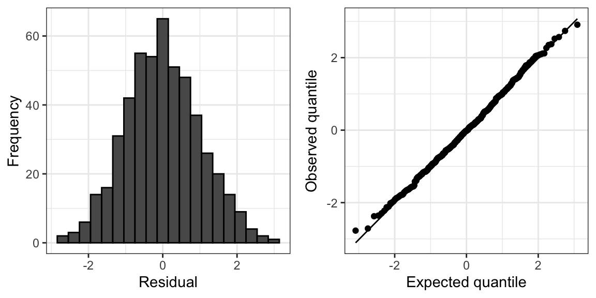
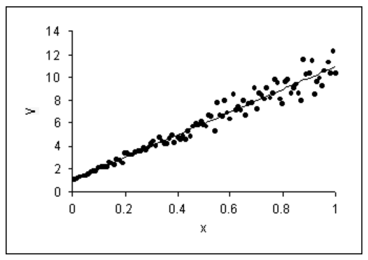
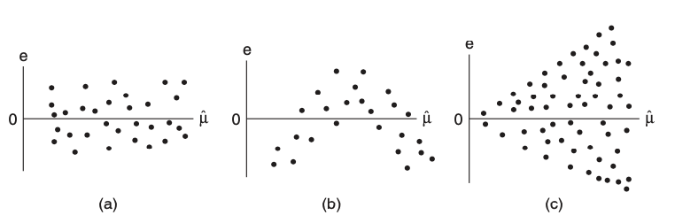

13 Overview
13.1 Non-normality
13.1.1 Origin
Non-normality occurs when the distribution of \(y|\boldsymbol{x}\) is either skewed or has heavier tails than the normal distribution. This may happen, for example, if there is some discreteness in \(y\).
13.1.2 Consequences
Non-normality is the most benign of linear model misspecifications. While we derived linear model inferences under the normality assumption, all the corresponding statements hold asymptotically without this assumption. Recall Homework 2 Question 1, or take for example the simpler problem of estimating the mean \(\mu\) of a distribution based on \(n\) samples from it: We can test \(H_0: \mu = 0\) and build a confidence interval for \(\mu\) even if the underlying distribution is not normal. So if \(n\) is relatively large and \(p\) is relatively small, you need not worry too much. If \(n\) is small and the errors are highly skewed or heavy-tailed, we may have issues with incorrect standard errors.
13.1.3 Detection
Non-normality is a property of the error terms \(\epsilon_i\). We do not observe these directly, but we can approximate them using the residuals:
\[ \widehat{\epsilon}_i = y_i - \boldsymbol{x}_{i*}^T \boldsymbol{\widehat{\beta}}. \]
Recall from equation (7.2) that \(\text{Var}[\boldsymbol{\widehat{\epsilon}}] = \sigma^2(\boldsymbol{I} - \boldsymbol{H})\). Letting \(h_i\) be the \(i\)th diagonal entry of \(\boldsymbol{H}\), it follows that \(\widehat{\epsilon}_i \sim (0, \sigma^2(1-h_i))\). The standardized residuals are defined as:
\[ r_i = \frac{\widehat{\epsilon}_i}{\widehat{\sigma} \sqrt{1-h_i}}. \tag{13.1}\]
Under normality, we would expect \(r_i \overset{\cdot}{\sim} N(0,1)\). We can therefore assess normality by producing a histogram or normal QQ-plot of these residuals.
13.1.4 Fixes
As mentioned above, non-normality is not necessarily a problem that needs to be fixed, except in small samples. In small samples (but not too small!), we can apply the residual bootstrap for robust standard error computation and/or robust hypothesis testing.
13.2 Heteroskedastic and correlated errors
13.2.1 Origin
Heteroskedasticity can arise as follows. Suppose each observation \(y_i\) is actually the average of \(n_i\) underlying observations, each with variance \(\sigma^2\). Then, the variance of \(y_i\) is \(\sigma^2/n_i\), which will differ across \(i\) if \(n_i\) differ. It is also common to see the variance of a distribution increase as the mean increases (as in Figure 13.1), whereas for a linear model the variance of \(y\) stays constant as the mean of \(y\) varies.
Correlated errors can arise when observations have group, spatial, or temporal structure. Below are examples:
- Group/clustered structure: We have 10 samples \((\boldsymbol{x}_{i*}, y_i)\) each from 100 schools.
- Spatial structure: We have 100 soil samples from a \(10\times10\) grid on a 1km \(\times\) 1km field.
- Temporal structure: We have 366 COVID positivity rate measurements, one from each day of the year 2020.
The issue arises because there are common sources of variation among samples that are in the same group or spatially/temporally close to one another.
13.2.2 Consequences
All normal linear model inference from Unit 2 hinges on the assumption that \(\boldsymbol{\epsilon} \sim N(\boldsymbol{0}, \sigma^2 \boldsymbol{I})\). If instead of \(\sigma^2 \boldsymbol{I}\) we have \(\text{Var}[\boldsymbol{\epsilon}] = \boldsymbol{\Sigma}\) for some matrix \(\boldsymbol{\Sigma}\), then we may suffer two consequences: wrong inference (in terms of confidence interval coverage and hypothesis test levels) and inefficient inference (in terms of confidence interval width and hypothesis test power). One way of seeing the consequence of heteroskedasticity for confidence interval coverage is the width of prediction intervals; see Figure 13.1 for intuition.

Like with heteroskedastic errors, correlated errors can cause invalid standard errors. In particular, positively correlated errors typically cause standard errors to be smaller than they should be, leading to inflated Type-I error rates. For intuition, consider estimating the mean of a distribution based on \(n\) samples. Consider the cases when these samples are independent, compared to when they are perfectly correlated. The effective sample size in the former case is \(n\) and in the latter case is 1.
13.2.3 Detection
Heteroskedasticity is usually assessed via the residual plot (Figure 13.2). In this plot, the standardized residuals \(r_i\) (13.1) are plotted against the fitted values \(\widehat{\mu}_i\). In the absence of heteroskedasticity, the spread of the points around the origin should be roughly constant as a function of \(\widehat{\mu}\) (Figure 13.2(a)). A common sign of heteroskedasticity is the fan shape where variance increases as a function of \(\widehat{\mu}\) (Figure 13.2(c)).

Residual plots once again come in handy to detect correlated errors. Instead of plotting the standardized residuals against the fitted values, we should plot the residuals against whatever variables we think might explain variation in the response that the regression does not account for. In the presence of group structures, we can plot residuals versus group (via a boxplot); in the presence of spatial or temporal structure, we can plot residuals as a function of space or time. If the residuals show a dependency on these variables, this suggests they are correlated. This dependency can be checked via formal means as well, e.g., via an ANOVA test in the case of groups or by estimating the autocorrelation function in the case of temporal structure.
13.3 Model bias
13.3.1 Origin
Model bias arises when predictors are left out of the regression model:
\[ \text{assumed model: } \boldsymbol{y} = \boldsymbol{X} \boldsymbol{\beta} + \boldsymbol{\epsilon}; \quad \text{actual model: } \boldsymbol{y} = \boldsymbol{X} \boldsymbol{\beta} + \boldsymbol{Z} \boldsymbol{\gamma} + \boldsymbol{\epsilon}. \tag{13.2}\]
We may not always know about or measure all the variables that impact a response \(\boldsymbol{y}\).
Model bias can also arise when the predictors do not impact the response on the linear scale. For example:
\[ \text{assumed model: } \mathbb{E}[\boldsymbol{y}] = \boldsymbol{X} \boldsymbol{\beta}; \quad \text{actual model: } g(\mathbb{E}[\boldsymbol{y}]) = \boldsymbol{X} \boldsymbol{\beta}. \tag{13.3}\]
13.3.2 Consequences
In cases of model bias, the parameters \(\boldsymbol{\beta}\) in the assumed linear model lose their meanings. The least squares estimate \(\boldsymbol{\widehat{\beta}}\) will be a biased estimate for the parameter we probably actually want to estimate. In the case (13.2) when predictors are left out of the regression model, these additional predictors \(\boldsymbol{Z}\) will act as confounders and create bias in \(\boldsymbol{\widehat{\beta}}\) as an estimate of the \(\boldsymbol{\beta}\) parameters in the true model, unless \(\boldsymbol{X}^T \boldsymbol{Z} = 0\). As discussed in Unit 2, this can lead to misleading conclusions.
13.3.3 Detection
Similarly to the detection of correlated errors, we can try to identify model bias by plotting the standardized residuals against predictors that may have been left out of the model. A good place to start is to plot standardized residuals against the predictors \(\boldsymbol{X}\) (one at a time) that are in the model, since nonlinear transformations of these might have been left out. In this case, you would see something like Figure 13.2(b).
It is possible to formally test for model bias in cases when we have repeated observations of the response for each value of the predictor vector. In particular, suppose that \(\boldsymbol{x}_{i*} = \boldsymbol{x}_c\) for \(c = c(i)\) and predictor vectors \(\boldsymbol{x}_1, \dots, \boldsymbol{x}_C \in \mathbb{R}^p\). Then, consider testing the following hypothesis:
\[ H_0: y_i = \boldsymbol{x}_{i*}^T \boldsymbol{\beta} + \epsilon_i \quad \text{versus} \quad H_1: y_i = \beta_{c(i)} + \epsilon_i. \]
The model under \(H_0\) (the linear model) is nested in the model for \(H_1\) (the saturated model), and we can test this hypothesis using an \(F\)-test called the lack of fit \(F\)-test.
13.3.4 Overview of fixes
To fix model bias in the case (13.2), ideally we would identify the missing predictors \(\boldsymbol{Z}\) and add them to the regression model. This may not always be feasible or possible. To fix model bias in the case (13.3), it is sometimes advocated to find a transformation \(g\) (e.g., a square root or a logarithm) of \(\boldsymbol{y}\) such that \(\mathbb{E}[g(\boldsymbol{y})] = \boldsymbol{X} \boldsymbol{\beta}\). However, a better solution is to use a generalized linear model, which we will discuss starting in Unit 4.
13.4 Outliers
13.4.1 Origin
Outliers often arise due to measurement or data entry errors. An observation can be an outlier in \(\boldsymbol{x}\), in \(y\), or both.
13.4.2 Consequences
An outlier can have the effect of biasing the estimate \(\boldsymbol{\widehat{\beta}}\). This occurs when an observation has outlying \(\boldsymbol{x}\) as well as outlying \(y\).
13.4.3 Detection
There are a few measures associated with an observation that can be used to detect outliers, though none are perfect. The first quantity is called the leverage, defined as:
\[ \text{leverage of observation } i \equiv \text{corr}^2(y_i, \widehat{\mu}_i). \]
This quantity measures the extent to which the fitted value \(\widehat{\mu}_i\) is sensitive to the (noise in the) observation \(y_i\). It can be derived that:
\[ \text{leverage of observation } i = h_i, \]
which is the \(i\)th diagonal element of the hat matrix \(\boldsymbol{H}\). This is related to the fact that \(\text{Var}[\widehat{\epsilon}_i] = \sigma^2(1-h_i)\). The larger the leverage, the smaller the variance of the residual, so the closer the line passes to the \(i\)th observation. The leverage of an observation is larger to the extent that \(\boldsymbol{x}_{i*}\) is far from \(\boldsymbol{\bar{x}}\). For example, in the bivariate linear model \(y_i = \beta_0 + \beta_1 x_i + \epsilon_i\),
\[ h_i = \frac{1}{n} + \frac{(x_i - \bar{x})^2}{\sum_{i' = 1}^n (x_{i'} - \bar{x})^2}. \]
Note that the average of the leverages is:
\[ \frac{1}{n}\sum_{i = 1}^n h_i = \frac{1}{n}\text{trace}(\boldsymbol{H}) = \frac{p}{n}. \]
An observation’s leverage is considered large if it is significantly larger than this, e.g., three times larger.
Note that the leverage is not a function of \(y_i\), so a high-leverage point might or might not be an outlier in \(y_i\) and therefore might or might not have a strong impact on the regression. To assess more directly whether an observation is influential, we can compare the least squares fits with and without that observation. To this end, we define the Cook’s distance:
\[ D_i = \frac{\sum_{i' = 1}^n (\widehat{\mu}_{i'} - \widehat{\mu}^{\text{-}i}_{i'})^2}{p\widehat{\sigma}^2}, \]
where \(\widehat{\mu}^{\text{-}i}_{i'} = \boldsymbol{x}_{i*}^T \boldsymbol{\widehat{\beta}}^{\text{-}i}\) and \(\boldsymbol{\widehat{\beta}}^{\text{-}i}\) is the least squares estimate based on \((\boldsymbol{X}_{\text{-}i,*}, \boldsymbol{y}_{\text{-}i})\). An observation is considered influential if it has Cook’s distance greater than one.
There is a connection between Cook’s distance and leverage:
\[ D_i = \left(\frac{y_i - \widehat{\mu}_i}{\widehat{\sigma} \sqrt{1-h_{ii}}}\right)^2 \cdot \frac{h_{ii}}{p(1-h_{ii})}. \]
We recognize the first term as the standardized residual; therefore a point is influential if its residual and leverage are large.
Note that Cook’s distance may not successfully identify outliers. For example, if there are groups of outliers, then they will mask each other in the calculation of Cook’s distance.
13.4.4 Overview of fixes
If outliers can be detected, then the fix is to remove them from the regression. But, we need to be careful. Definitively determining whether observations are outliers can be tricky. Outlier detection can even be used as a way to commit fraud with data, as now-defunct blood testing start-up Theranos is alleged to have done. As an alternative to removing outliers, we can fit estimators \(\boldsymbol{\widehat{\beta}}\) that are less sensitive to outliers; see Chapter 17.